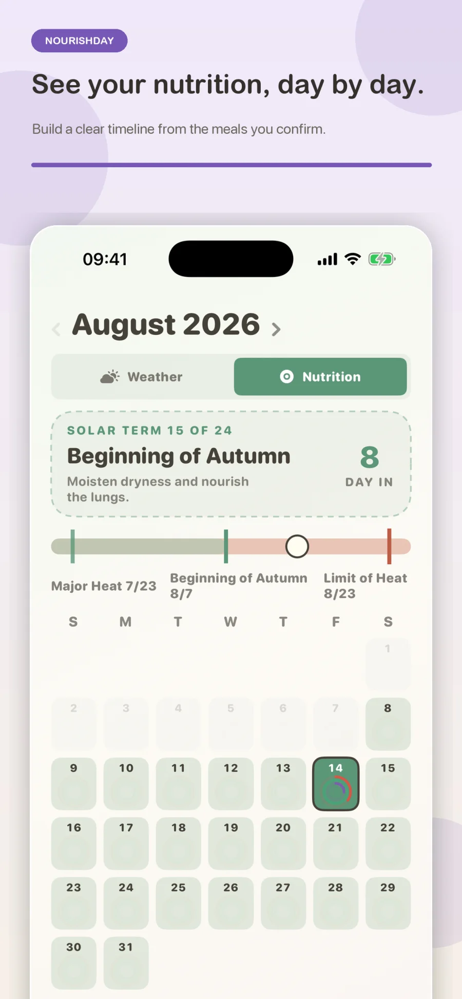
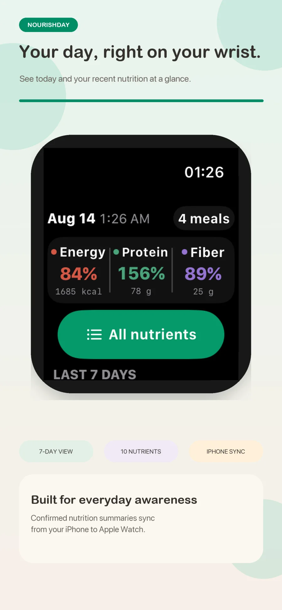

NOURISHDAY · FOOD CALENDAR
One photo.
A clearer view of how you eat.
Snap a meal. Nourish your day.
Take or choose one image. NourishDay automatically identifies a meal, receipt, order, or Nutrition Facts label, then lets you review every detail before saving it to your food calendar.

ONE IMAGE, THREE CLEAR STEPS
Start quickly.
Stay in control.
The latest capture experience puts the camera, photo library, and manual entry at the top of the screen. Image type is detected on your device before the existing upload flow begins.
- 01Add one imageUse a meal photo, receipt, order screenshot, or packaged Nutrition Facts label.
- 02Confirm before uploadCorrect the detected type if needed. Nothing is uploaded until you tap Upload & Analyze.
- 03Review, adjust, and saveEdit foods, portions, meal type, time, or consumed servings before the record enters your calendar.

MORE THAN A CALORIE TRACKER
Nutrition in context,
for everyday life.
NourishDay connects confirmed meals with time, place, weather, seasonal rhythm, and practical food knowledge—without presenting estimates as medical facts.
Automatic intake, optional correction
One entry point for every meal record
Use the camera or photo library without choosing a mode first. Local text evidence distinguishes meals, receipts, orders, and Nutrition Facts labels; uncertain images safely default to meal-photo handling.
Meal•Receipt•Order•Nutrition label
Reviewed nutrition, not a model guess
Know where the numbers come from
Recognition suggests visible foods and portions. Confirmed items map to reviewed catalog records; printed Nutrition Facts remain tied to the values you verify.
Energy 84%Protein 78 gFiber 25 g
A calendar that shows nutrition
See patterns day by day
Switch between weather and nutrition views, follow daily intake rings, and revisit confirmed meals and history over time.
日DAY BY DAY
Weather and the 24 solar terms
Follow the rhythm of the season
See current weather, air quality, lunar dates, solar terms, food ideas, tea suggestions, and gentle lifestyle references for the day.
WeatherAir qualitySolar termsTea
A bilingual food and wellness library
Search every category at once
Explore hundreds of ingredients, prepared dishes, herbs, teas, and wellness guides with English and Simplified Chinese names, properties, cautions, and reviewed nutrition where available.
FoodsDishesHerbsTeas
Your day across Apple devices
Keep recent nutrition close
Home Screen widgets and the Apple Watch companion show privacy-bounded daily and seven-day summaries, with the nutrients you choose to follow.
84%Energy156%Protein89%Fiber
CURRENT APP EXPERIENCE
Built around the choices you confirm.
These screens come from the current NourishDay product and its latest validated capture flow.
- CaptureOne image, automatically classified
- ReviewFoods, portions, or printed values
- CalendarDaily nutrition and seasonal context
- LibraryGlobal bilingual search
- WatchToday and the latest seven days




START FREE, UPGRADE ONLY IF USEFUL
The core app stays available
without a subscription.
Sign in and use NourishDay on its ongoing free plan. Premium is optional and adds higher limits and deeper history.
FREE
Build a daily rhythm
For getting started and keeping a recent record.
- Up to 3 image analyses per day
- Latest 7 natural days of nutrition records
- Today, Calendar, Scan, Library, and Me
- English and Simplified Chinese
OPTIONAL PREMIUM
Go further back and scan more
For fuller history, planning, and connected use.
- Up to 20 image analyses per day
- All nutrition records without a time limit
- Complete nutrition calendar
- Personalized guidance and cross-device sync
Subscription availability, pricing, and trial eligibility are shown in the App Store purchase sheet and may vary by storefront.
DESIGNED FOR TRUST
AI suggests.
You decide.
Nothing uploads before confirmation
Your selected image stays on the device until you explicitly tap Upload & Analyze.
Results remain editable
Food identity, portions, meal type, time, and consumed servings stay under your control.
Wellness content has clear limits
Recognition, nutrition, body preferences, and traditional wellness content are estimates for education and general wellness—not diagnosis or treatment.
QUESTIONS & ANSWERS
About NourishDay
What can NourishDay recognize?＋
Choose one meal photo, receipt, order screenshot, or packaged Nutrition Facts label. Local text evidence selects the likely handling automatically, and a compact correction menu remains available before analysis.
How reliable are nutrition estimates from photos?＋
Image recognition supplies candidates and estimated portions. You review or edit them first; confirmed foods are then mapped to reviewed catalog values. Printed Nutrition Facts are stored only from the values you confirm.
Can I use the app without Premium?＋
Yes. The ongoing free plan keeps the five core tabs available, includes up to three image analyses per day, and provides the latest seven natural days of nutrition records without requiring a payment method.
Does NourishDay provide medical advice?＋
No. Food recognition, nutrient totals, body preferences, and seasonal wellness content are estimates for education and general wellness only. Consult a qualified healthcare professional about medical conditions, allergies, pregnancy, medications, or dietary restrictions.
What works on Apple Watch and widgets?＋
The iPhone publishes a bounded recent summary with your three selected nutrients. Widgets show today or the latest seven days, while Apple Watch adds today's totals, all supported nutrients, recent days, and an offline cache.
Does NourishDay support Simplified Chinese?＋
Yes. The core iPhone, iPad, widget, and Apple Watch experiences support English and Simplified Chinese. Use “中文” at the top of this page for the Chinese product site.
START WITH TODAY
Today's meal can be
the first page of your calendar.
NourishDay · Food Calendar
Snap a meal. Nourish your day.